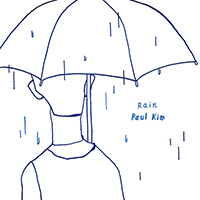
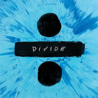

메가히트 음원(최장 연속 차트인)
종합 차트 기준
-
1위
제목:밤편지 가수:아이유 기간:145주간
-
2위

제목:비 가수:폴킴(Paul Kim) 기간:105주간
-
3위

제목:Shape Of You 가수:Ed Sheeran(에드 시런) 기간:97주간
- 4위 제목:모든 날, 모든 순간 (Every day, Every Moment) 가수:폴킴(Paul Kim) 기간:93주간
- 5위 제목:Closer (feat. Halsey) 가수:The Chainsmokers(체인스모커스) 기간:90주간
- 6위 제목:D (half moon) (Feat. 개코) 가수:DEAN(딘) 기간:86주간
- 7위 제목:너였다면 가수:정승환 기간:82주간
- 8위 제목:돌아오지마 (Feat. 용준형 of 비스트) 가수:헤이즈(Heize) 기간:80주간
- 9위 제목:너의 의미 (feat. 김창완) 가수:아이유(IU) 기간:79주간
- 10위 제목:미안해 가수:양다일 기간:75주간
- 11위 제목:첫눈처럼 너에게 가겠다 가수:에일리(Ailee) 기간:72주간
- 11위 제목:REALLY REALLY 가수:WINNER 기간:72주간
- 13위 제목:가을 안부 가수:먼데이키즈(Monday Kiz) 기간:69주간
- 14위 제목:Lost Stars 가수:Adam Levine(Maroon 5) 기간:68주간
- 14위 제목:비도 오고 그래서 (Feat. 신용재) 가수:헤이즈(Heize) 기간:68주간
- 16위 제목:나만 안되는 연애 가수:볼빨간사춘기 기간:67주간
- 16위 제목:마지막처럼 가수:BLACKPINK 기간:67주간
- 18위 제목:우주를 줄게 가수:볼빨간사춘기 기간:66주간
- 19위 제목:Way Back Home 가수:숀(SHAUN) 기간:65주간
- 19위 제목:빨간 맛 (Red Flavor) 가수:Red Velvet(레드벨벳) 기간:65주간